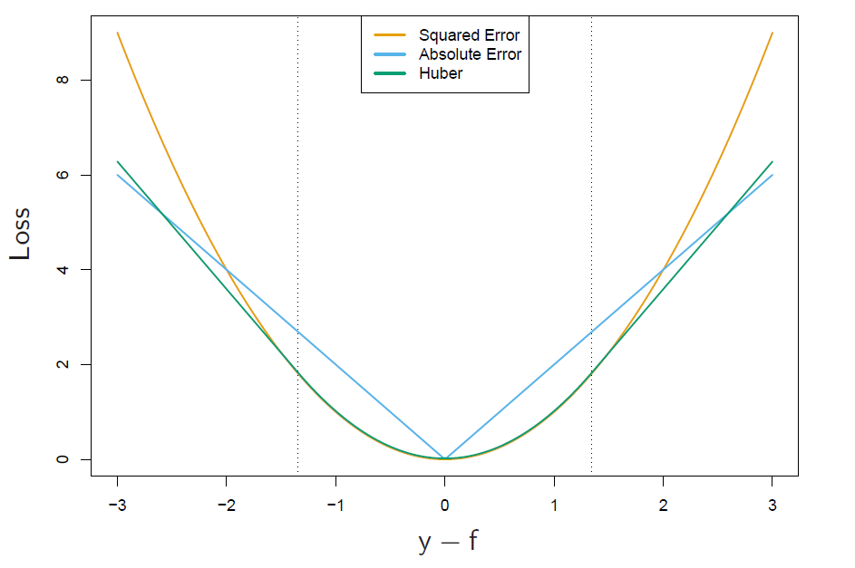
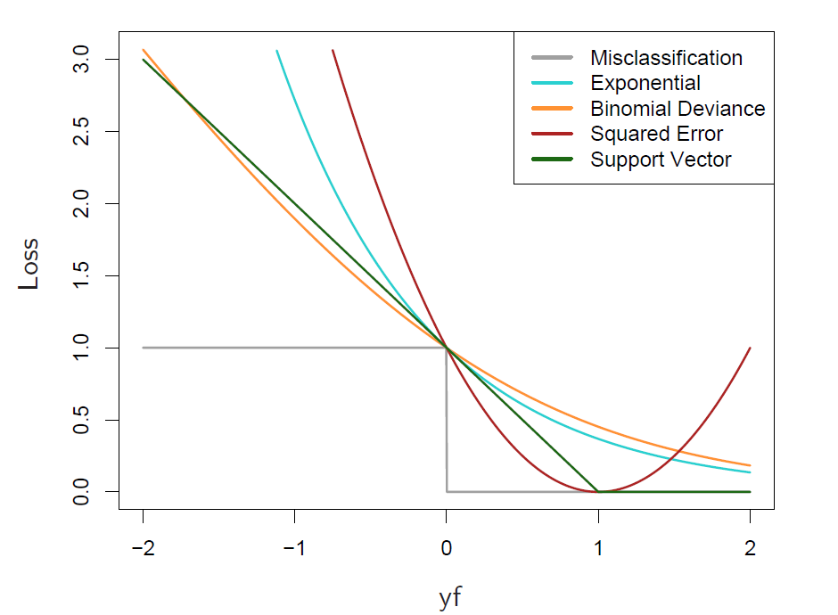

The elements of statistical learning 01
boosting
committee from a bunch of weak learners\(G_m\)(slightly better than rand)
\[ G(x)=sign\left(\sum_{m=1}^Ma_mG_m(x)\right) \]
one generic method is forward-stagewise method where you compute one model \(G_m\) and its correspd weight \(a_m\) at a time (min \(L(y_i, f_m(x_i)+\beta G_m(x_i))\)).
if using MSE as the \(L\) loss, each time we are seeking for a model \(\beta G\) that fit the residual.
AdaBoost.M1
iteratively fit \(G_m\) on a weighted dataset.
method derived by using exp loss instead of the common mse ..
\[e^{-y_if(x_i)}\]
suppose we consider scaled model (\(range f=\{-1,1\}\))
at stage m
we want to opt the following
\[ \min_{(a,G)}\sum_{i=1}^Nexp\left(-y_i(f_{m-1}(x_i)+aG(x_i))\right)\\ =\sum w_iexp(-y_iaG(x_i)) \]
basically using forward-stagewise method, if we fix \(a\)
\[\begin{align} &exp(a)\sum_{y_i\neq G(x_i)}w_i+exp(-a)\sum_{y_i=G(x_i)}w_i\\ =&exp(a)\sum_i^N w_i - exp(a)\sum_{y_i=G(x_i)}w_i+\dots\\ =&(exp(-a)-exp(a))\sum_{y_i=G(x_i)} w_i + exp(a)\sum_i^Nw_i\\ =&A\sum_i^Nw_i[y_i\neq G(x_i)]+\dots \end{align}\]
so actually, we are minimizing a weighted dataset using 0-1 loss
with this new solved \(G\), we can then solve for \(a\)
\[\begin{align} &\frac{d \sum w_iexp(-aG(x_i))}{da}\\ =&-\sum w_iy_iG(x_i)exp(-ay_iG(x_i))\\ =&-(exp(-a)+exp(a))\sum_{y_i=G(x_i)} w_i + exp(a)\sum_i^Nw_i=0 \end{align}\]
in short, AdaBoost.M1 is directly abtained from forward-stagewise method. With exp loss, we can get this neat sol.
further, since \(f_m=f_{m-1}+G_m\), the weights \(w_i\) can be calculated iteratively.
more about exp loss
\(f^\star=arg \min_fE_{Y|x}(e^{-Yf(x)})=\frac{1}{2}log\frac{Pr(Y=1|x)}{Pr(Y=-1|x)}\), it est one half the log odds of \(Pr(Y=1|x)\), and \(Pr(Y=1|x)=\frac{1}{1+e^{-2f}}\)
let \(p(x)=Pr(Y=1|x)=\frac{1}{1+e^{-2f}}\) and \(Y^\prime =(Y+1)/2\), we can see that cross-entropy and exp loss are actually est the same population.
ce: \(-l(Y,f(x))=log(1+e^{-2Yf(x)})=Y^\prime logp(x)+(1-Y^\prime)log(1-p(x))\), (f is softmaxed before output)
exp: \(e^{-Yf}\)
same Pr, and f
loss func and robustness
here robustness means being disturbed less by outlier samples.
regression
squared-error -> \(f(x)=\mathbf{E}(Y|x)\), more focus on obs with large absolute residuals during fitting process, far less robust, bad on long-tailed error distrb, gross outliers
absolute loss -> median
Huber loss. \([y-f(x)]^2 \text{ for abs residual } \leq \delta \text{ and } 2\delta|y-f(x)|-\delta^2 \text{ otherwise }\)

classification
we consider two-class classification problem
in regression problem, \(y-f(x)\) is considered as the margin
in classif.., \(yf(x)\) plays the same role. where \(y\in\{-1,1\}\)

conclusion
squared-error, and exp loss are not robust, but give rise to simple boosting algorithms.
specific boosting example
boosting tree
region \(R_j,\, j=1,\dots,J\)
\(x\in R_j\mathbb{R}ightarrow f(x)=y_j\)